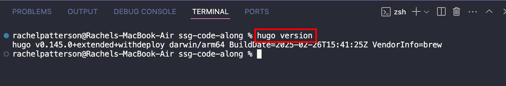
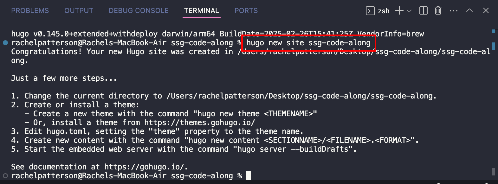
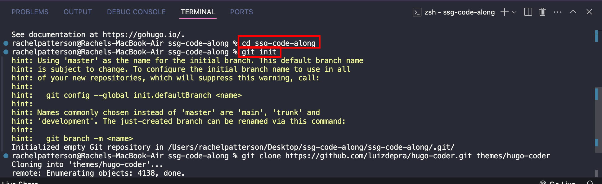
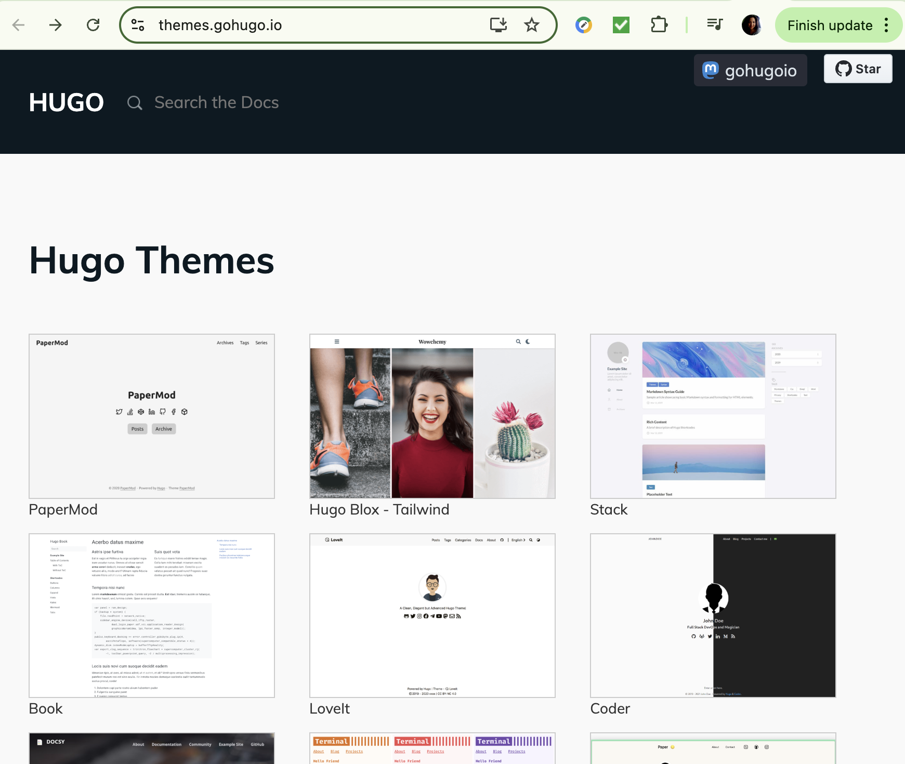
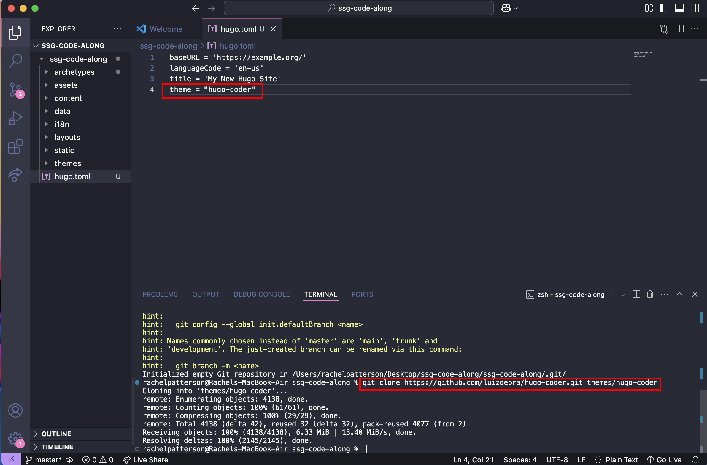
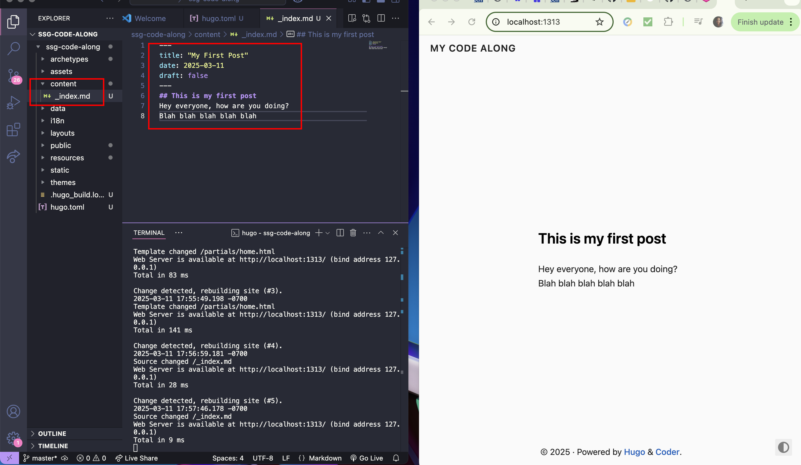
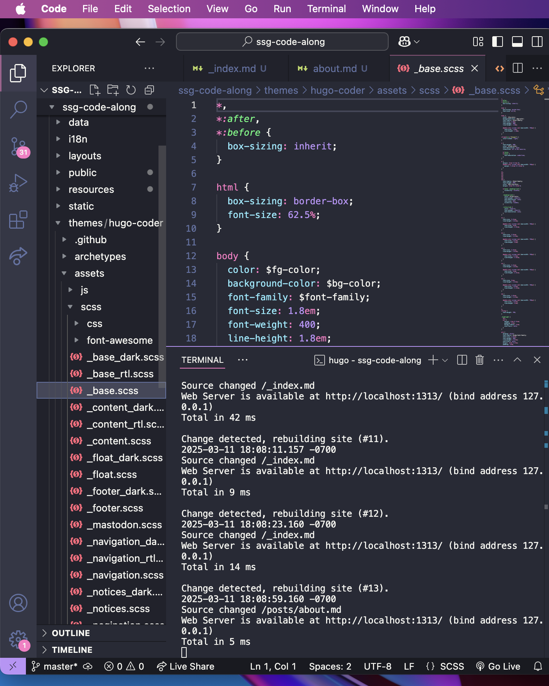

How it works
- Write Content: Create content files in Markdown or another supported format.
- Define Templates: Design the layout and structure of your site using templates.
- Build Site: Run the SSG's build command, which processes the content and templates to generate static HTML files.
- Deploy Site: Upload the generated HTML files to a web server or CDN.
Code Along
Static site generators are different in how they work. Some, like Jekyll and Hugo, are fast and simple for basic sites, while others, like Gatsby and Next.js, are more advanced for handling dynamic content or integrating with CMS systems. They also use different languages (e.g., Ruby, Go, or React) and offer varying levels of templates, plugins, and community support. The best choice depends on whether you need speed, ease of use, or advanced features for your project.
What all SSGs have in common
- Markdown files for Content
- Templates abd Layouts
- Configuration
- Build Process
Set Up the SSG
For this code along we decided to try Hugo. Firstly, let's set up Hugo on VS Code!
To set up Hugo, we need to install Hugo onto VS Code. To do this open the terminal and type in brew install hugo. If you already have it installed or are unsure if you do, type in hugo version to see if you do and what version you have installed.
Now that Hugo installed, we need to set up a new site. In the terminal type in hugo new site your-site-name.
Next switch to the directory of your new site by typing in cd your-site-name. Then type in git init to initialize a new Git repository in your projects's directory.
Themes
Note that themes in static site generators like Hugo are often set up differently, depending on how the theme developer structured it.
Some ways themes can vary
- File and Folder Organization
- Customization Options
- Ease of Use
- Features
Set Up a Theme
Every SSG will have different themes to browse through. Once you pick a theme you like you can apply it to your new site.
There are multiple ways to apply a theme in Hugo (and other SSgs). You can clone the theme repository using git clone, manually download and extract it, or use Git submodules for better version control. Another method is copying the theme's files (like layouts and static assets) directly into your site for full customization. Finally, advanced users can use theme components for modular setups. Each method depends on your need for updates, control, and workflow simplicity.
Once you apply the theme to your folder, above I used git clone url in the terminal, now you need to declare the theme so that Hugo knows to look in the themes/ directory for the theme files.
In the example above I declared the theme in hugo.toml, and although this worked, it is better practice to declare the theme in config.toml since it is the primary configuration file for your Hugo site.
Content
Finally, we get to add content and customize.
Markdown files
The content folder is where you will have all of your markdown files. Like HTML, you need an index file as the landing page. In your _index.md file you can now start to write out your content! Markdown has it's own writing and formatting syntax. Here is a Github doc that lists everything you would need to start.
Now you're free to create as many pages as you'd like! You can also go into the CSS and Javascript files too to customize them if you'd like.